EXPLORE
名駅周辺
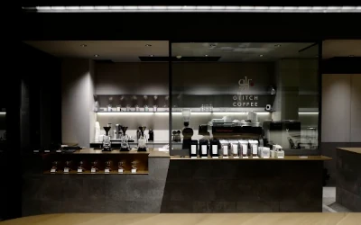
GLITCH COFFEE NAGOYA
名古屋駅から徒歩約10分のカプセルホテル「ナインアワーズ名古屋」の1階にある、 東京・神保町発の人気スペシャルティコーヒー専門店。 豆の個性を最大限に引き出すライトロースト（浅煎り）にこだわり、 世界各地から厳選した希少なシングルオリジン（単一農園・品種）の豆を取り扱っています。
MAPで確認する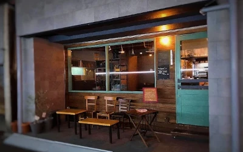
Dublinroomcafe
こだわりのスペシャルティコーヒーと手作りスイーツが楽しめるおしゃれな隠れ家カフェです。 大通りから少し入った落ち着いた場所にあり、アトリエのような大人な空間が広がっています。 夜23時まで営業している夜カフェとしても人気です。
MAPで確認する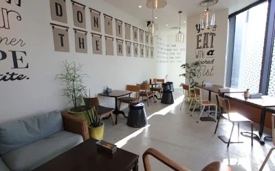
YURT 大名古屋ビルヂング店
アメリカ西海岸のナチュラルな空間と料理を楽しめるカフェダイニングです。 アメリカ西海岸のコンフォートフードをベースにしたBBQ料理やデリ、 パンブッフェ、見た目も華やかなスイーツなどを楽しめます。
MAPで確認する栄駅周辺
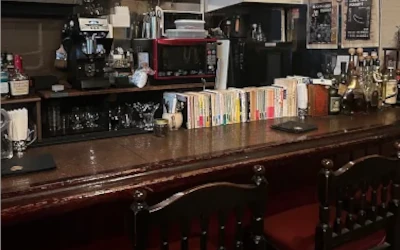
Twilightcoffee sakae
名古屋市中区栄の雑居ビル1階にひっそりと佇む、 黄昏時をコンセプトにした大人の隠れ家カフェです。 薄暗い落ち着いた空間にアンティーク調のインテリアや甲冑のオブジェが飾られ、 1人でも静かに過ごせる空間です。
MAPで確認する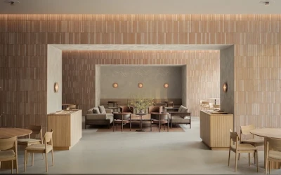
ブルーボトルコーヒー名古屋栄カフェ
名古屋の喫茶店文化に着想を得た「Authentic ＆ Cute」をコンセプトに、 限定メニューのプリン・ア・ラ・モードや美濃焼タイルを用いた温もりある空間を提供しています。 芦沢啓治建築設計事務所が担当し、建物の大きな柱を活かした3つのエリアで構成されています。
MAPで確認する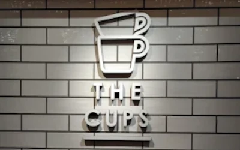
CAFE&PASTA THE CUPS Q
名古屋の人気カフェ「THE CUPS」の名前を引き継ぎ、 2023年3月にリニューアルオープンした愛知県名古屋市中区栄のカフェです。 こだわりの珈琲に加え、イタリアンの要素を取り入れた本格的なパスタやスイーツを提供しています。
MAPで確認する大須駅周辺
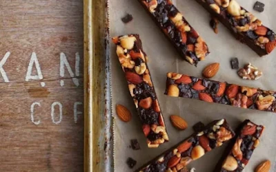
カンノンコーヒー 大須店
名古屋市中区の大須仁王門通にある、 おしゃれで人気の小さなコーヒースタンド＆カフェです。 常時5種類以上から選べるこだわりのコーヒーや、 見た目が可愛い手作りの焼き菓子を楽しむことができます。
MAPで確認する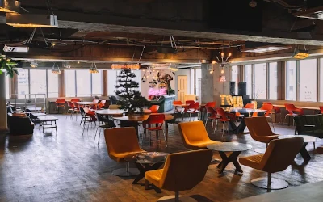
CAFE TOLAND
名古屋市大須（上前津駅近く）のビル6階にある、 最大級の広さを持つラグジュアリーな隠れ家カフェです。 昼は自然光が入る開放的な空間、夜はキャンドルが灯る空間に変わり、 名物の「パッフル」やスイーツ、ランチを楽しめます。
MAPで確認する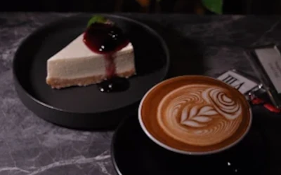
トワイライトコーヒー
名古屋市大須にある、薄暗くシックなモノクロ空間や暖炉が特徴の隠れ家風おしゃれカフェです。 竹炭を使った「ブラックラテ」や昔ながらの「固めプリン」、 SNSで映えるドリンクなどが人気を集めています。
MAPで確認するMAP
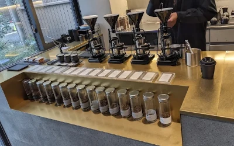
GLITCH COFFEE NAGOYA
愛知県名古屋市中村区名駅2-42-2
電話：052-526-1665
定休日：なし
営業時間：8時～19時
コーヒーにこだわりがあるお店なので一杯の値段は1000円以上と高めですが、 コーヒー好きにはたまらないお店です。
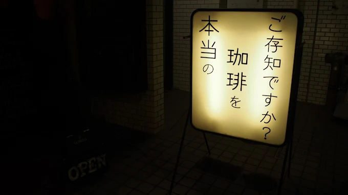
Dublinroomcafe
愛知県名古屋市中村区名駅3-21-20
電話：052-565-8885
定休日：火曜日
営業時間：11時～23時
配管むき出しで天井から照らす間接照明にアンティークな雰囲気がゆったりと落ち着ちついた気分にさせてくれます。
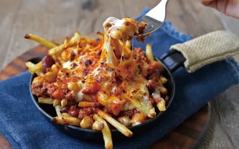
YURT 大名古屋ビルヂング店
愛知県名古屋市中村区名駅2-42-2
電話：052-433-1540
定休日：なし
営業時間：11時～23時
行列ができることも多々ある人気店です。アメリカ西海岸のナチュラルな空間と料理を楽しめます。
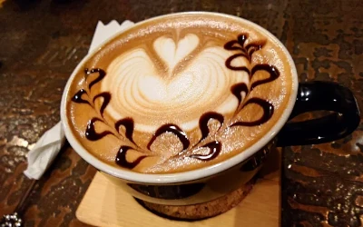
Twilightcoffee sakae
愛知県名古屋市中区栄4-4-1 第3メイトビル 1F
電話番号の記載なし
定休日：なし
営業時間：12時～22時
一人でも入りやすい雰囲気でアンティークや落ち着いた空間が好きな人にはベストマッチなお店です。
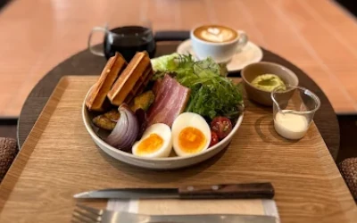
ブルーボトルコーヒー名古屋栄カフェ
愛知県名古屋市中区栄4-1-1 中日ビル 1F
電話番号の記載なし
定休日：なし
営業時間：8時～20時
コーヒーはもちろんのことスコーンが県外から食べに来る人もいるほど人気なお店となっています。
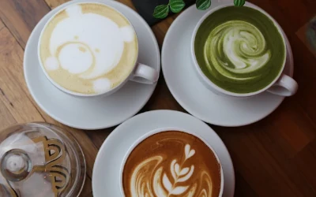
CAFE&PASTA THE CUPS Q
愛知県名古屋市中区栄3-35-22
電話：050-5600-3991
定休日：なし
営業時間：11時～19時
コーヒーを楽しめるのはもちろんパスタやスイーツも充実しており、本格パスタが人気です。
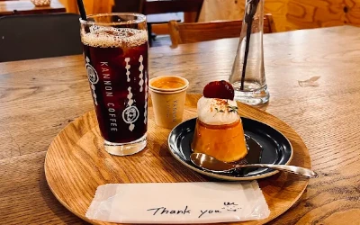
カンノンコーヒー 大須店
愛知県名古屋市中区大須２丁目１７−２５
電話：052-201-2588
定休日：なし
営業時間：11時～19時
フォトスポットになる絵なども飾ってあるので映え重視の方にはお勧めです。店内は狭めなのでイートイン目的で行くのは難しいかもしれません。
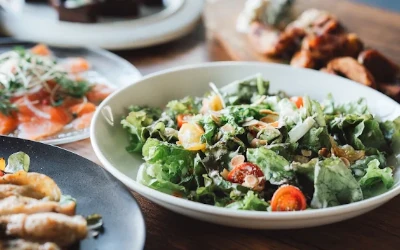
CAFE TOLAND
愛知県名古屋市中区大須４丁目１１−５ Z's building 6F
電話：050-5457-2517
定休日：水曜日
営業時間：11時～19時
店内は広く、落ち着いた雰囲気のお店です。ボリュームもあるので男性客も満足できる料理が豊富です。
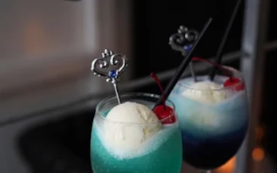
トワイライトコーヒー
愛知県名古屋市中区大須3-1-35 HASE-BLDG 3 2F
電話番号の記載なし
定休日：なし
営業時間：12時～22時
ラテアートがとても上手なお店です。店内は落ち着いた色味の家具でそろえられていて、時間帯にもよりますが比較的混んでいることは少ないため周りの目を気にすることなくリラックスできます。